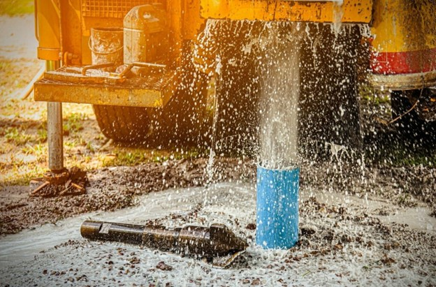

Разделы

Раздел: Бурение
Бурение– это процесс создания отверстия в грунте или скале с использованиемспециального инструмента, называемого буровым инструментом или бурильныминструментом. Классификация бурения может быть осуществлена по несколькимкритериям:
-
По способу привода инструмента:
- Ручное бурение – инструмент приводится в движение силой рук человека.
- Механизированное бурение – применение специальных механизмов (электрических, пневматических, гидравлических) для привода инструмента.
- Роторное бурение – основано на применении вращательного движения инструмента с использованием удара при прохождении через грунт или скалу.
-
По применяемому инструменту:
- Бурильное долото – исторически первый и самый распространенный инструмент, применяемый в бурении. Он имеет коническую форму и может быть выполнен из различных материалов.
- Шнек – используется для бурения отверстий большого диаметра. Он имеет специальную спирали, обеспечивающую устойчивость и эффективность процесса.
- Коронка – представляет собой основной элемент в роторном бурении. Она имеет круглую форму с вмонтированными режущими элементами или алмазными наконечниками.
-
По типу процесса:
- Разведочное бурение – проводится для изучения грунта или скалы, определения их состава и особенностей.
- Съемочное бурение – используется для получения образцов грунта или скалы для дальнейшего анализа.
- Скважинное бурение – осуществляется для создания скважин, которые могут быть использованы для нефтедобычи, добычи воды, геологических исследований и т.д.
- Строительное бурение – выполняется для создания отверстий для установки опор, фундаментов, свай и т.д.
-
По способу бурения:
- Вертикальное бурение – отверстия бурятся перпендикулярно горизонту.
- Горизонтальное бурение – отверстия бурятся параллельно горизонту, например, для создания туннелей или трубопроводов.
- Угловое бурение – отверстия бурятся под определенным углом к горизонту для выполнения специфических задач.
